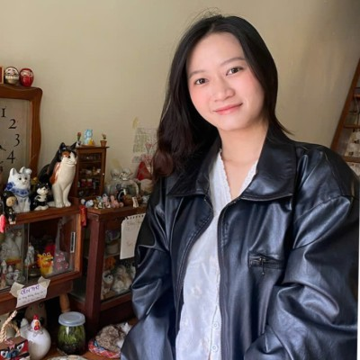

MIDDLE QUALITY CONTROL ENGINEER
Enterprise Web Portals | Web & Mobile Testing | API & Automation (Playwright)
Ho Chi Minh City / Binh Duong | (+84) 0868.662.064 | hoanghongvan2001@gmail.com | github.com/HHV01
English: Technical Reading & Writing (Specs, Test Cases, Bug Reports) | Conversational English
Quality Control Engineer with 3 years of experience assuring software quality across Enterprise Web Portals, Cloud Data Platforms, REST APIs, and Web & Mobile applications. Strong background in the STLC: analyzing requirements, designing test cases using practical techniques (Boundary Value Analysis, Equivalence Partitioning, Positive/Negative scenarios, Risk-based testing), executing test runs, and managing defect lifecycles.
Strong hands-on expertise in API testing with Postman scripts & Newman CLI, Advanced SQL data validation (HackerRank certified), and building E2E automation tests using TypeScript & Playwright on GitLab CI/CD. Experienced in performance stress/stability testing on streaming systems and reconciling complex billing data with <2% variance. Good at reading technical documentation and writing test artifacts in English; proactive and eager to learn in Agile/Scrum teams.
Testing Methodologies: Web & Mobile App Testing, Functional, System, Integration, Regression, UAT, Performance & Stress Testing, Stability Testing, Real-time UI Testing, Risk-based Testing
Test Design & Process: Requirement Analysis, Test Case Design (Boundary Value Analysis, Equivalence Partitioning, Error Guessing, Positive/Negative Scenarios), Defect Reporting & Lifecycle, Retesting & Release Verification
API & Automation: Postman (Test Scripts, Collections, Environments), Newman CLI, RESTful API, TypeScript, Playwright (UI/E2E & API Testing), GitLab CI/CD
Database & Data Validation: SQL (Advanced Queries, Joins, Aggregation, Subqueries), Database Testing, JSON, Server Log Analysis
IoT & Cloud Integration: PLC, EdgeX, Gateway, MQTT, RabbitMQ, Telemetry Simulation, Real-time Data Reconciliation
Tools & Methodologies: Agile/Scrum, Git, Redmine, JIRA, BecaWork, Swagger, AI-assisted Test Design (Edge-case exploration)
Languages: English (Proficient in reading technical documentation, writing test cases & bug reports; conversational for work), Vietnamese (Native)
Engineering Degree in Information Technology - Thu Dau Mot UniversityOct 2019 - Mar 2024
GPA: 7.36 / 10 | Major: Software Engineering & Information Systems
SQL (Advanced) Certificate - HackerRank (Demonstrates advanced capability in database querying, complex joins, subqueries, and data verification)
QC Manual Certificate - CrossTech, Apr 2024 (Comprehensive training in STLC, test design techniques, bug reporting, and Agile testing)
Technical Portfolio: GitHub (github.com/HHV01) - Playwright E2E & API test automation framework implementations